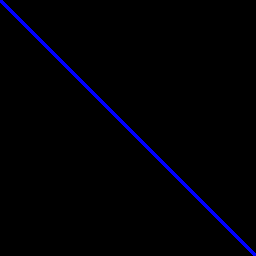

:dep base64 = "0.10.1"
//From Tour of the EvCxR Jupyter Kernel
//https://github.com/google/evcxr/blob/master/evcxr_jupyter/samples/evcxr_jupyter_tour.ipynb
base64::encode(&vec![1, 2, 3, 4])"AQIDBA=="Jupyter Notebookはカーネルを切り替えることにより，様々な言語で開発することができます．ここでは，Rustのカーネル実装であるevcxr_jupyterを用いて，NotebookによるRust開発に挑戦してみます．
jupyter-langsのRustに関する部分をお借りしました．当該箇所を自分のDockerfileにコピペで特に問題なく動作しました．使用するだけならば，jupyter-langsを直接使うのが一番手っ取り早いと思います．それにしても，jupyter-langsはすごいですね．これだけカーネルを導入するのは色々と大変だったと思います．ありがたいです．
外部Crateの導入はCode Cellに以下の様な記述を追加することで実現します．
:dep Crate名 = バージョン初回評価時はコンパイルを行うため少し時間がかかります．以下に，base64を導入する例を示します．
:dep base64 = "0.10.1"
//From Tour of the EvCxR Jupyter Kernel
//https://github.com/google/evcxr/blob/master/evcxr_jupyter/samples/evcxr_jupyter_tour.ipynb
base64::encode(&vec![1, 2, 3, 4])"AQIDBA=="evcxr_jupyterは以下のフォーマットでMIME Type と Content を標準出力に出力することで，HTMLに埋め込んで表示することが可能です．
EVCXR_BEGIN_CONTENT <<MIME Type>>
<< Content >>
EVCXR_END_CONTENT具体的には，以下の様に表を出力したり，
println!(r#"EVCXR_BEGIN_CONTENT text/html
<table>
<tr>
<td>1</td>
<td>2</td>
<td>3</td>
</tr>
<tr>
<td>4</td>
<td>5</td>
<td>6</td>
</tr>
<tr>
<td>7</td>
<td>8</td>
<td>9</td>
</tr>
</table>
EVCXR_END_CONTENT"#);| 1 | 2 | 3 |
| 4 | 5 | 6 |
| 7 | 8 | 9 |
画像を出力したりすることが可能です
println!(r#"EVCXR_BEGIN_CONTENT image/png
iVBORw0KGgoAAAANSUhEUgAAAJAAAACQEAQAAAAd3/ZwAAAABGdBTUEAALGPC/xhBQAAACBjSFJNAAB6JgAAgIQAAPoAAACA6AAAdTAAAOpgAAA6mAAAF3CculE8AAAAAmJLR0T//xSrMc0AABKWSURBVHja7Z15eBRF+se/IeFSIkFgOTwICRIEFOQQBM8FFVHWC5afN8pyyLHoKrqgCAqIBEVAXcEbBEEQiIt4ggIKrAhClOWKhCQkIeQgIQkhJDPz/f0xsMNcSR9VXTOhP8/Tz5N0Vb/1vtXf6a6u6q6KIEnY2BiklmoHbMIbW0A2prAFZGMKW0A2prAFZGMKW0A2prAFZGMKW0A2prAFZGMKW0A2prAFZGMKW0A2prAFZGMKW0A2prAFZGMKW0A2prAFZGMKW0A2prAFFIQ3IoGICOD551V7EtqccwJaHOcWxsM5gGtH4Dx7VwB/d7n/nj4d+OneIMaOAM8sd9t7LV91ZIrgOUR5fxLwbMNIcqJ3Htc4Mn6Ydz6APNXJ396Li73zFHyjOkLrOaeuQBvv9v7/3Qhgwh/e+xY7gYPv+h/72oXe/7/RDZj8oPe+zyerjlABqhUsipymnivBJw6STv88vbP8rywAOXMqyf5kdkrg9DPbvgkk65AL3w6c3jCJ5Lf+5X61zpNn/z2qa0osNUZACw55n8yBX5DHizzpudOqFoeo7cBQT5nlF5JjbvFOf/YZ1TUllhpzC9tym/f/n90BNIwBtnUFSt8HZqRb48dzzYDjjYC9CcAF0cCb33qnr2+ruqbEEkHWjC9Tm3cAju5R7YU2XNlARAvVXoghbK5AR/sCmxYB5Uv80xy/hY94AKC0PEAM5wGb/wlk/J9q73Si+h6qhcKp3u2IWdHksZme9NwlctozbZbLsbt/nMf3ksXk/DLv9PTBqmtcO2EhoH0LAp+IsTPJH14hu30j9gS/vYZ03eEuu/Q38sGbxNpv5SLXfUJOSgicvvGk6hrXTli0gdKGAq0/sKasJjuBvGQAj3j2FZUCjaKti3fbHKD7OOvKM0NYtIHqWPjkMuAIvMQDADEF1sZb74S15ZkhPAT0onVlLR0AcIT3vsJF1sZb927zNqwiLAQUddC6ssqdwOxEwPm7+//iImBYJ2vjrbvS2vLMEDICmtXSPaodEQE8vAJYtQY4vBNwuoBlAn+RFzwPTLsU2JENlD4DpD/qn+fpGCDqSqDtbKBhI2Dlnf550icBJ6YAuw4BiTlAi0HifHwvA3AlA0c+BtZeA4zI8NTNE0vM2xeK6lb8GWQPMczbT2bFkyzwLzullz5bR9oHjuFoFLkgnazfTm4soUTIuHNle/EV3XMBufUu0jWg+vJ3axgri/kzmX+ThmB6kDvjyX77bQFZRiIFCucz8rcK/T7suC64zdjPyaIf9dtMaUb2f1VcbMPTVZ8pb0JGQNtzxFTwhgSSLuN+bB7hb7PzLLI0yVx8v4C88JT5+L7oqfpMeRMyAirJMlexkxuQ5U7zfpBk+mjyH7XJW64k3zxBOvLF2HU8Rc5NNhdn9iJ15ygQIdUTfV4ccPKQ/uO2XQd036Tae+3sTQc6/hNwLdN/rHMXUMviboWqsPwx/mhfYFNjYNt64LdNwIF4IC0NeKOPfvH0mgccc4WXeADg8lZA6Wrg3s/1Hzv5LSB9GnBgL/D7y8Avc4FN5QpH8a283PmOqpvZxvyJdITRoGNAniSnvi6uTlSM4kdZKda8LDF2pm0HnrscQD0rvZfAbOB5AM3rAMNGmzd3OBa41OIQLL2FXUagicOcjZlZwHNdAZxnpedy+dsoYOGD5u30mGe975Y3oteOAO54x9ixCfdY6akxLp4E9B4O3JgKXPUBEPMX7ce+PRAYZXAcbH4ZMKK+goCtvmdWbpLbzR9qW7e3yC9/JZ1R2urn2TXGyilZbPWZdKOkH+i9wepPrIpt/TXV143zP+T1r+uzOylBxVl0o2Q0vtcsFaWqp89W4P5+QFnr4Hlq9QCSdH4gcMNkhUFZJtUhZOkK8o8k8tqr1F8NVG7RL5M5l1RdXT9drN1eK5f7Rf3iVNKVbe0VSKqAMluRk0aTvTPVn7RQ3PK+rbr+xr5ksN31nvsLWCs+o5b3FLYbiHYCpZ0VXl5DnI49gZ0fAVEJgdNL3wei/2auDEdrIDJVXgzy2kBbgNIIeY7XBHb/B3h7cPD0BkOBmy4xVwYbyo1Baj/Qjnigm0T11xQKTwIxAXrV03YDra8wbverdUC/PnJ9l/oU1vUgkNhBbgA1gcVDAu9/zcTwxphb5IsHsKAn2rUG6LwL+P0F+cGEK5dsATKu8d5XdBRo1NyYvTqtgOISoK4F37NJ7weqNQD4+kf5gYQzh3sBZaO89y0qMW5vV11rxANYNBZWsQ+oe3ngtKmdgPGtgDqvAqnJwA2zgKxtnvR2kcDICd7H/PgosDLevF9Gxtb2r5JTR7lbgaY93X9XTgDqvOKd3vkiYFU3oOXtwKExwNVtgZLdgW0VxQANC+X46YfsfoK0E+So9YH7K9o8QTLJO/++Wv75dpd457n3oJh+mBQj/SQPkftvJQfVEdsnlPaEp4jPS/3Ti+t7u5HeNbitQRNPz5T2ra7IDCFFQMXdyU8jyNit1YzhXOF/rOOyABWyyjuPMAG9bSLI1eTcruIEVNTytN3pZNOHvdN6bQ3sQr3+VdtsmER+0FPu7LHCBbQkUXul9XrX//iC2wLnLX3Lk0eYgFLMxZq7R5yAnKfPxN55/mkRd5H0ebHfuUyf/VfzRJ9pN8Ib0aMaa8+7ZRjw/XTP/xVdgdGPBc6bc1T87Tuir7njGw0Q48fIH4Fap1ui2z72T2cS8OUc731LHq3OqjdPNxXjq79zgpm7V/+vr00R+UCXqvOURYq/Av0x1HicJPnzXEFXwpUem9s3BM83MJecv4j8yzX6yxj/qZwrkJQ20IJIsQ3Mjz/zti9MQEsNBLebzIkk32ktxodHXvKxv4zs8bTY+ntxMUlJo/TSHuOX5QD3mZyJ9I6NwPQjwJU+40UDU8U8xl9/rb78mQ8CqSPF1lPpFuB8n05E5/lA4hpgooCe5HldgbHbxfrshRxdulm70NgvZvxjZObVwe2KugKp3lKq+Szp5I/ksslk7Vhj9heaecrUiFQBkWSMjtvZ/O1k8UfV26wJAkreor0OXTPInzaRV2foK4N1ZJ9dyQLK1vjmYbMxZOVu7XbDWUD1HyLTvjRepykvk327aCtr3wSZZ9eNlLEwZxqwIB5ouVNb/oTNQNQ5MGr/yDag4E2g1W3GbbSZAMTeoS1vuxnAjD8DFZ3lxSRcQLvWA81SgZE63gNqYXDUOZzolgrM3gjUv8C8rabdtOed+ANQN7mKRfNMIlRA8zsBV/UFCnQ+PZwvqEMulNkeBzQeD6QI+LE06KX/mOtWyVm+U6iAXrrB2HERk8UHFqq0PQocMDmTBg3ORjJ9urHjqkKogOZuMXZc2V/FBxbKJHwKlD5m/PhTBn+o8yS0eIWaHLQdSPsZ6L1W33F5t4sPLNSZOkd73o1pwJf3e7Z8neOC8cOAPcuBsU4JgUh5tvsv+e9a2h9t49vrMx/Oj/Fnb3ldqo/12I3mylg0xr2QsCzkzA/UHhjgBIo7Ahf8t/rsB/cAWAlA0pNCMDZrjD7vYeDjEcDKHmLL/7ADML6aPDQxip59EGgRJ9Znfwcl02iStl9KuY6eWWHvAz2lL5Yj6eSF+eKuQNEZJAurLvOogbcb/tcTfbvssyt5coWFFwOFU7Xlzc+T/EsJxK36sje/FDjcErjsGn3HBaPkUiBvRdV5Dn9i3H5iTzF+VoU0Ac1dAAzRMaXd/p/kB+tLxC36jznvFLBA0FR9ALCnmlvUnqeM2352EjBhMIDnxPnri3gB7QemFABP6Hzt4QcJbxxWiwEBAcANOwDMFOPChszgaacOAg/HmLP/ynJg+HTAtUOMv36IvidOWmXsft2ypfYyhL1Q9qrxOBf1EdcW+i6fpM+L88eakSMGiivjoSOiz7Qb4S+UNXkWKEg0dmznxdrz7hIwKeX6x6vPE5MCdPnOf/+Bu4GEJPM+nKFeP2AUgOi2wIYkYGOGONtncOUBEU3E2hQuoG/6A/2+Eh+8ShzZQKTP25XlLYH6R1R7pp2PWwMPSpjoQngb6NYvgcpmwKa1wO01eJC0XjYQY3LuHtn0zgK+eRco7y9HPADk9wMVjiRnUH2vr5nNEeSF9Mf/rt63QNuTiWTuNNlnVlIbKBDOPwFRKvp5BBHoFgYASYnA3c+q9s6fknVAAwumdgEsmqk+9VNrgrGaLoK/0BDFnmesK0u6gCoI9JD5WYlCLrZwPXs99PgVKD5uTVnSBfR8XaDQwl+EldTKAYZIbwAYY+hPAFzyy5HaBvo+GejTWX4QsgnWBgKAQ52AuN9UexiYTxzAfZFyy5B3BWpVM8RTHa2TgVETVXsRmPujgIokuWXIE1A6EGdwVZ5w47VeQNRdqr0ITFSZXPtSb2HHmwKrC4Et7wPf/BXICNM1vqq6hZ0h6xjQZgdQbnCAVhTN2gP9XECvr4A7rwaa5Uou0JruJjeOX8n8MnLgneo72/Rszkht8RVPI4coWAek+9Nk7hKyMtnKs+lGyarNKT2Btj9rzz94HfCaia8YzFDvBaDxUH3HVJ4EctsZL/NfvYGXl2rP/0M2cKPJmVAMY71mydlL9f/K5txftc3K5WTFLhXRiGXZav11M3amOn8tF1D5W8Yv1au7um24niRzd5Ab3icnZ5Dt3vXkuc9JnmisrkIDUTCGHNuerD2ejJtFPteFXD+AzEklnYc9+Ta8YbxujikSkeUCWjbG3P2+n4aXyTo8qqYyA3GqN1m7Y9X+9rmJfLO3uXqZFa0mPkvbQK7jQGQfALJerzyL1NZA6xBY6GW1A7intjVlnVwM1HvA2vgsXfIyZRAsEQ8A7FhvZWTBWbPBurK2yfjytBosFdDFgq91LesCdweZ7vZrk1P4CiEPWBjktdnm94kvLmGRghitvmeW9iX3ZpCp68jMYjJ3Kln4JLnyZn33/FWDSDrdNstnkI/69L9E5pE8rqZdcIbi7/39njKbrDjdr1R4KXnnQ/rinl+HLMwm8+qTWa+Qhx4j9y0gC6eqiVHJY3xATpJRE7VVYseR/ocff8E/X8llakPa2dzHp0Ok02dizfzD+gTkcKqNyRcly34Hovh6wPGytry9X/TfFz3Gf98f36qNaXOa9//3PQ7U8lmZsHETIErH7P7ZyWpj8iVkBLRHx9JLyyYBLp+5iLIr/PNtvVFtTEnDvP//7HcAnbz3lXUDHDrW9volU3teKwgZAX03XHve4+8AL84FKoYDyANyZgD3BnhkX70ZKNyt3a5ISuYB63zWvajMAt7vB7DQ/X9FbWC8ztkzksrVxBMU1ffQM8QPN9iJdqj6PA8lk78+RjpbyI3BdT+5uyM5clT1Pt0yw3inYSihZDA1EBFBlgiPmqi9baSFcZ2BwWOBKy4HGgiYZaOsCNjbCFhxAph5vjg/63cDTgZ5lzw0ztj/nAkNPsp0/7rih5MvFZBbZ5DHu5M8qf8RX+sWM5p8PJZcEkP+kkEe3ksef4Us/8j9aoTjZ9KRQJ5qRxYPI7OuJncUk8tqk2OdZIsP5Pg17/QKjSVZ5PYcMpHkle3daYmSr6J6CZkrUFUU/QNo9LpqL6zj0CEgNla1F9oImUZ0VVReqNoDa6mw6KNAEYSFgCrGqfbAWso/VO2BdsJDQNvM2wgnyitVe6CdsBDQqSBfgM5eChzoAQy8U7WH+rj2C2DvVcB7gwOnl4fTxOuqW/FaKO171lNKV/dLaeVnreKcXybnaUjW9keSx/fKTeQXw8kmDk96Th/VNa6dsHgKA4ATNwOZEcBlK4BaDb3TnDuBqC6qPdRO6Qrg/IE+O0cCKRFA04uAGAmLosgibARUHa1Ohs93ZxwCIIwaylURFm0gLdy63H9fo0TgwPeAoykww6Kfyahk4NQRIOtm4IqX/NN7Z6LGiAdAeLSBtPChz9qs42uTp1ye9MKRVbdLtM6oH3NB1elpJzxlOv9NJnbwTp80WnVNiaXGCKioCRn3jvskrd8VOM/tAwKf9I8ucqcXd6haHNmnF0cJthp17NbA5W6PI5FMNthFZrZSXVNiqTEC0sKmtf4nfc587zzBVhmaH+edb+kR/zyfRqiO0HpqTCNaC47mQO2zZsSfnA9M8X0bcA9wbRqw+aw1zBqvB47GAZGx3lnfiQJGnPUlRHF3IPoc6/SUs9xTiBKVA3zdH3jgCmBUT2BKPgBfAbUHlpQCsWftWkd/8QDAcAdQvg94YQvwrwIgurq1m2og59QVSA8rugHjegEvbARGhth7yKGELSAbU9SYfiAbNdgCsjGFLSAbU9gCsjGFLSAbU9gCsjGFLSAbU9gCsjGFLSAbU9gCsjGFLSAbU9gCsjGFLSAbU9gCsjGFLSAbU9gCsjGFLSAbU9gCsjGFLSAbU/w/IpTqp4TSsCgAAAAldEVYdGRhdGU6Y3JlYXRlADIwMjAtMTEtMTFUMDE6MzQ6MTMrMDA6MDAnCoLDAAAAJXRFWHRkYXRlOm1vZGlmeQAyMDIwLTExLTExVDAxOjM0OjEzKzAwOjAwVlc6fwAAAABJRU5ErkJggg==
EVCXR_END_CONTENT"#);
また，fn evcxr_display(&self)となる関数（トレイト？）を任意の型に対して実装することで，その型をNotebookに出力することが可能となります． 以下に，image::RgbImageに対して，fn evcxr_display(&self)を実装した例を示します．
:dep image = "0.23"
//From Tour of the EvCxR Jupyter Kernel
//https://github.com/google/evcxr/blob/master/evcxr_jupyter/samples/evcxr_jupyter_tour.ipynb
extern crate image;
extern crate base64;
pub trait EvcxrResult {fn evcxr_display(&self);}
impl EvcxrResult for image::RgbImage {
fn evcxr_display(&self) {
let mut buffer = Vec::new();
image::png::PNGEncoder::new(&mut buffer).encode(&**self, self.width(), self.height(),
image::ColorType::Rgb8).unwrap();
let img = base64::encode(&buffer);
println!("EVCXR_BEGIN_CONTENT image/png\n{}\nEVCXR_END_CONTENT", img);
}
}
image::ImageBuffer::from_fn(256, 256, |x, y| {
if (x as i32 - y as i32).abs() < 3 {
image::Rgb([0, 0, 255])
} else {
image::Rgb([0, 0, 0])
}
})
:dep plotters = { version = "^0.3.4", default_features = false, features = ["evcxr", "all_series", "all_elements"] }// From Plotters Tutorial with Jupyter
// https://plotters-rs.github.io/plotters-doc-data/evcxr-jupyter-integration.html
extern crate plotters;
use plotters::prelude::*;
evcxr_figure((640, 480), |root| {
root.fill(&WHITE);
let mut chart = ChartBuilder::on(&root)
.caption("y=x^2", ("Arial", 50).into_font())
.margin(5)
.x_label_area_size(30)
.y_label_area_size(30)
.build_ranged(-1f32..1f32, -0.1f32..1f32)?;
chart.configure_mesh().draw()?;
chart.draw_series(plotters::series::LineSeries::new(
(-50..=50).map(|x| x as f32 / 50.0).map(|x| (x, x * x)),
&RED,
)).unwrap()
.label("y = x^2")
.legend(|(x,y)| PathElement::new(vec![(x,y), (x + 20,y)], &RED));
chart.configure_series_labels()
.background_style(&WHITE.mix(0.8))
.border_style(&BLACK)
.draw()?;
Ok(())
})// From mandelbrot.rs
// https://github.com/38/plotters/blob/master/examples/mandelbrot.rs
use plotters::prelude::*;
use std::ops::Range;
fn mandelbrot_set(
real: Range<f64>,
complex: Range<f64>,
samples: (usize, usize),
max_iter: usize,
) -> impl Iterator<Item = (f64, f64, usize)> {
let step = (
(real.end - real.start) / samples.0 as f64,
(complex.end - complex.start) / samples.1 as f64,
);
return (0..(samples.0 * samples.1)).map(move |k| {
let c = (
real.start + step.0 * (k % samples.0) as f64,
complex.start + step.1 * (k / samples.0) as f64,
);
let mut z = (0.0, 0.0);
let mut cnt = 0;
while cnt < max_iter && z.0 * z.0 + z.1 * z.1 <= 1e10 {
z = (z.0 * z.0 - z.1 * z.1 + c.0, 2.0 * z.0 * z.1 + c.1);
cnt += 1;
}
return (c.0, c.1, cnt);
});
}
evcxr_figure((640, 480), |root| {
root.fill(&WHITE);
let mut chart = ChartBuilder::on(&root)
.margin(20)
.x_label_area_size(10)
.y_label_area_size(10)
.build_cartesian_2d(-2.1f64..0.6f64, -1.2f64..1.2f64)?;
chart
.configure_mesh()
.disable_x_mesh()
.disable_y_mesh()
.draw()?;
let plotting_area = chart.plotting_area();
let range = plotting_area.get_pixel_range();
let (pw, ph) = (range.0.end - range.0.start, range.1.end - range.1.start);
let (xr, yr) = (chart.x_range(), chart.y_range());
for (x, y, c) in mandelbrot_set(xr, yr, (pw as usize, ph as usize), 100) {
if c != 100 {
plotting_area.draw_pixel((x, y), &HSLColor(c as f64 / 100.0, 1.0, 0.5))?;
} else {
plotting_area.draw_pixel((x, y), &BLACK)?;
}
}
Ok(())
})